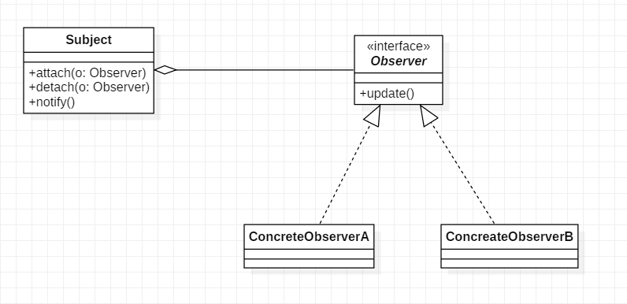

在对象之间定义了一对多的依赖，这样一来，当一个对象改变状态，依赖它的对象会收到通知并自动更新。其实就是发布订阅模式，发布者发布信息，订阅者获取信息，订阅了就能收到信息，没订阅就收不到信息。
观察者模式在开发过程中应用十分广泛, 比如C#中的event(委托, 多播委托等).
角色
UML类图

代码
public interface Observer {
void update();
}
public class ConcreteObserverA implements Observer {
private String name;
public ConcreteObserverA(String name) {
this.name = name;
}
@Override
public void update() {
System.out.println(name + " 收到通知! 准备执行xxx工作.");
}
}
public class ConcreteObserverB implements Observer {
private String name;
public ConcreteObserverB(String name) {
this.name = name;
}
@Override
public void update() {
System.out.println(name + " 收到通知, 准备停止yyy工作.");
}
}
public class Subject {
private Set<Observer> observers = new HashSet<>();
public void attach(Observer o){
observers.add(o);
}
public void detach(Observer o){
observers.remove(o);
}
public void doSomething(){
int i = 0;
while(i < 10000){
// do something...
i++;
}
// after a while ...
this.notifyObserver(); //工作执行完成, 通知所有观察者
}
private void notifyObserver(){
for(Observer o : observers){
o.update();
}
}
}
使用
public static void main(String[] args){
Subject subject = new Subject();
ConcreteObserverA a1 = new ConcreteObserverA("A1");
subject.attach(a1);
ConcreteObserverA a2 = new ConcreteObserverA("A2");
subject.attach(a2);
ConcreteObserverB b1 = new ConcreteObserverB("B1");
subject.attach(b1);
ConcreteObserverB b2 = new ConcreteObserverB("B2");
subject.attach(b2);
subject.doSomething();
}
输出结果:
A2 收到通知! 准备执行xxx工作.
B2 收到通知, 准备停止yyy工作.
A1 收到通知! 准备执行xxx工作.
B1 收到通知, 准备停止yyy工作.
策略模式与观察者模式
策略模式与观察者模式除了UML类图看起来很像以外, 其实完全不同.
优缺点